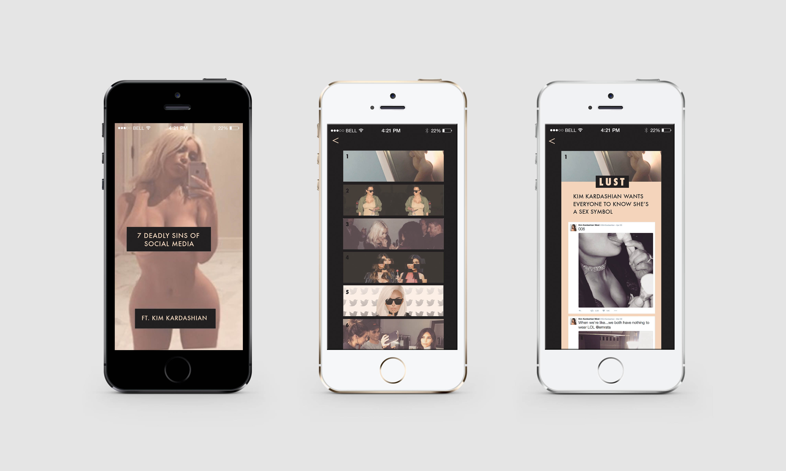

Information Architecture III taught me a lot about designer for the user, creating an experience, and promoting your point of view. I was collecting data that was social media based and landed on Kim Kardashian's twitter feed. She is idolized by many but should not be. I decided to pair her twitter feed with the Seven Deadly Sins of Dante. I want people to laugh when viewing the app but also realize the insanity that is Kim Kardashian's fame.
